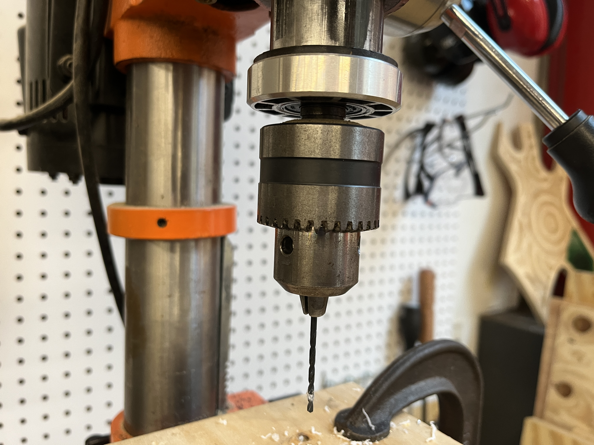

WK2: 2D Design and Cutting
Laser Cutting
What we learned this week (laser cutting) was the only topic/machine/tool I already knew before taking the class,
so the models I built were a little show-off.
A Box
Even though there are millions of ways to build a box that is able to hold things,
a regular cuboid should always be the most wildly accepted form.
So I started with the normal box.
At first I directly built the 2D version of the box,
but it turned out that the printing product was not good because those teeth could not match with each other.
Since those teeth were hard to imagine in a 2D plan, I started building a 3D model instead.
Then the 2D version was much easier.
When I was re-drawing the 2D version for the laser-cutting, I further improved the box a little bit by adding a cute lid on it.

Failed Version.

After the failure, I started with 3D Model first.

Improved 2D Version.

The box.

The box with a lid.
A Fancy Box
A regular box should be the most convenient type of "container" to store things in our daily life.
But people always like fancy things. So there is a fancy box.
This time I did not need to build 3D model in Rhino because the perfect match of teeth in this type of box design was less necessary and surprisingly easier to imagine.
However, I still failed because those teeth in each petal need five more milimeters to be locked.
So I have to print again to adjust the dimension.

2D Modeling.

Failed Version: each petal needs be 5 mm wider to connect with each other

The box

The box
A "Box" for Books
I also made a bookshelf for myself. I started with 3D modeling in Rhino.
First, I used the command sweep2 to create the surface.
Then, the surface were sliced by several sections.
After the surface and sections were boolean splitted, I got a series of bookshelf partition.

Modelling Process.

The Bookshelf

The Bookshelf
Other Fun
Here are some other fun. This is a little structure built with a number of small identical units intersecting with each other.
Idealy, it was supposed to be able to hold wine bottles, but the structure turned out to be too delicate to hold such a heavy thing.
The structure or the material should be changed to be able to be a "box" for wine bottles.

Single Units.

Laser Cutting.

The Structure.

The Structure.

The Structure.
Modeling Components
I selected these two things to build 3d model in rhino.
Drill bits and drill chucks are usally combined to work together to create holes in plastic, wood, metal, and more.

Drill bit and chuck.

Chucks Modeling.

Bits Modeling.

The Joint.

Assembly.